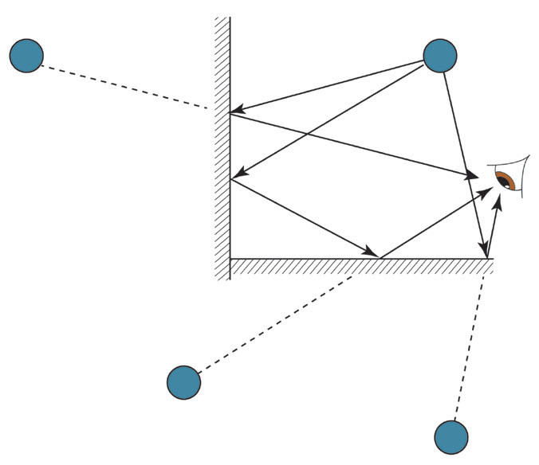

The reflected ray changes direction by an angle that is double the angle through which the mirror is rotated. Therefore, if the mirror is rotated by an angle the reflected ray will rotate by an angle .
Multiple mirrors
Sometimes, systems are made up of two or more mirrors and can create multiple images of a single object. A common example of this is a right-angle mirror.
Right-angle mirrors
Right-angle mirrors refer to two mirrors that are ‘joined’ at their edges at an angle of 90°. Suppose we take two mirrors and set them at right angles to each other. You will see a typical image in mirror 1 and another image in mirror 2. The two plane mirrors each produce a left-right reversal of the images, that is, 1 and 2. These images are sometimes referred to as primary images. If you look carefully, you see that a third image is formed by the rays reflecting off mirror 1 and then off mirror 2 to your eyes (Figure 4.17). This third image is identical to the other two except that it results from two reflections, thus, it does not show right-left reversal. Image 3 is usually referred to as the secondary image. To explore the concept of images formed by multiple mirrors, perform Activity 4.6.
